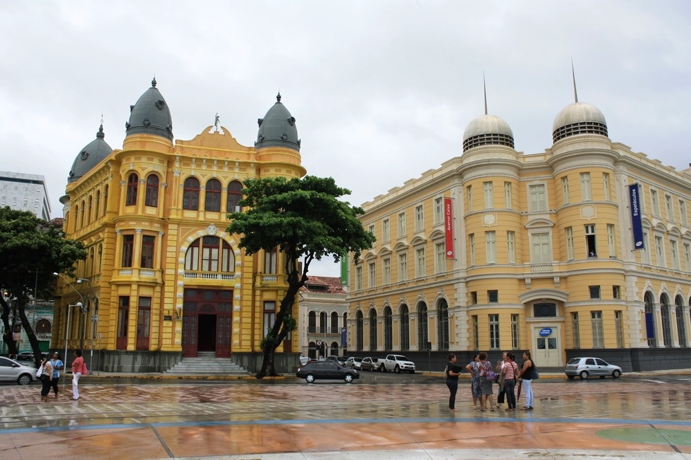
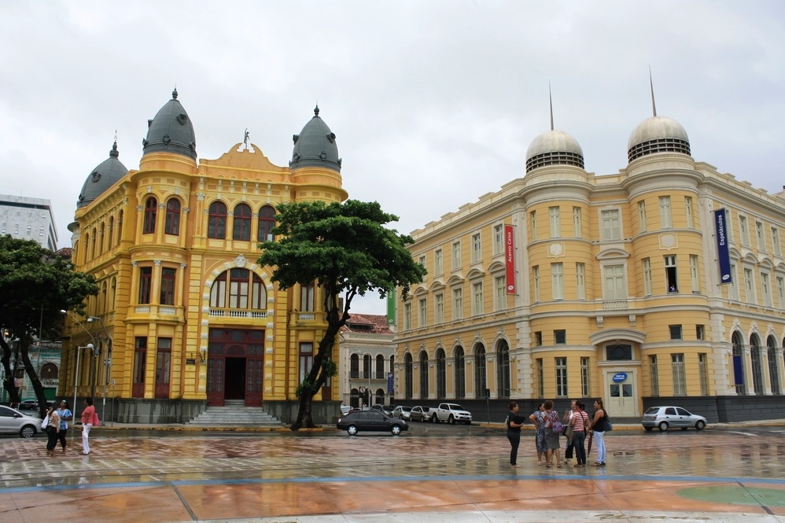

✈✈ Pontos Turísticos do Recife Antigo
Conheça um dos principais pontos turísticos de Recife!!!
 


Um dos pontos turísticos mais famosos do Nordeste é o Marco Zero, fica na Praça Rio Branco, conhecido como local de fundação da cidade do Recife e também como ponto inicial de contagem das distâncias calculadas a partir da cidade. O lugar é um dos pontos mais importantes na capital Pernambucana, pois é também uma região de forte movimento durante o Carnaval. Aproveite sua visita para tirar uma foto com os dois marcos (o antigo e o novo), observar a vista para o Parque de Esculturas e os edifícios do Centro Cultural da Caixa e da Associação Comercial de Pernambuco. Se quiser fazer compras, vale a pena visitar o novo Mercado de Artesanato, que também fica no local.